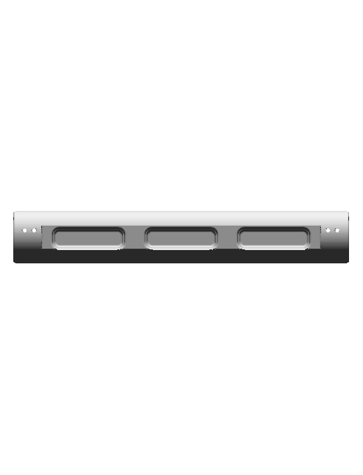
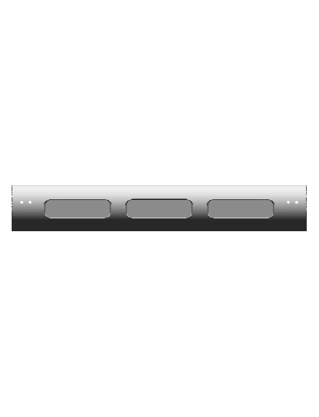
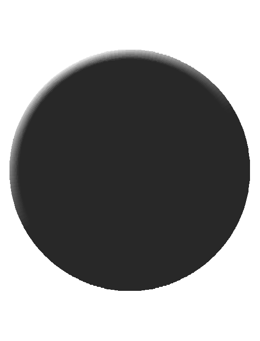
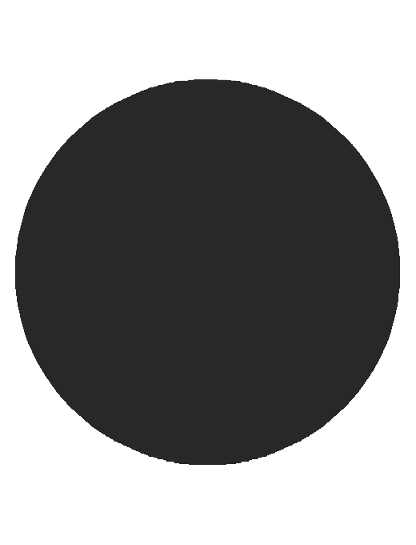
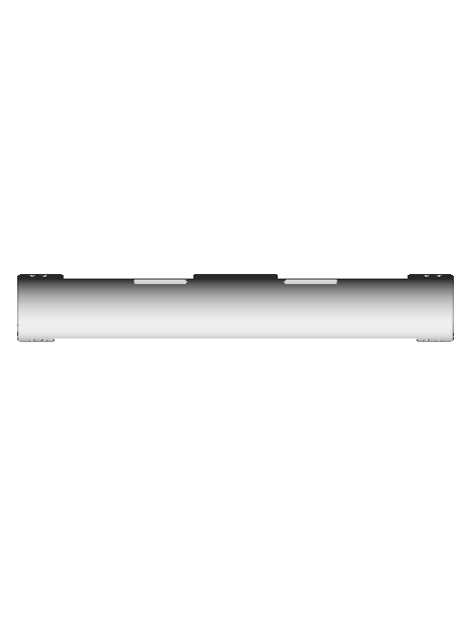
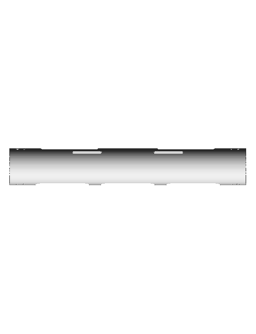

Source-approved analytic cylinder with seven editable pocket regions and four separate through-bores. Every current contact identity is retained. Comparison against prior committed asset d0e4e95191e4a76822815bb4eeef3a32caa6fea0. Native generated cords and their reproducibility checks pass. Human app review remains pending.
| Prior committed asset | Native CAD |
|---|---|
front | front |
side | side |
top | top |
Native cavity profiles preserve measured opening dimensions; geometric roundovers replace the old dense faceted surfaces. Compiler validation and independent reopen/recompute/edit/restore checks passed. Native geometry contains no material, texture, or mounting hardware.